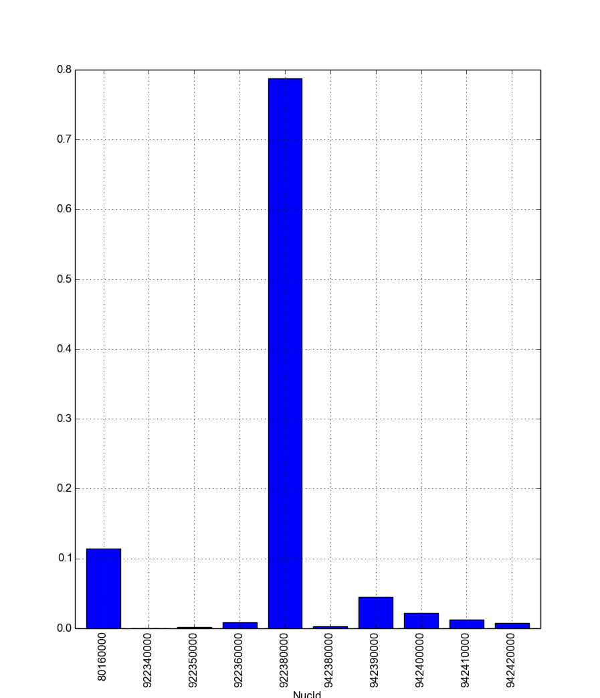

Tutorial¶
This document will walk you through the basics of how to use cymetric on the command line, from Python, and even how to write your own metrics!
Cymetric operates by reading data from a Cyclus database, computing metrics, and writing those metrics back to the database. This way, previously seen metrics are stored for later retrieval. The dependencies between metrics are automatically computed and evaluated.
Without further ado, let’s dive in!
Command Line Usage¶
Cymetric ships with a command line utility, just called cymetric. Since cymetric is wholly dependent on acting Cyclus database, you must supply a databse as an argument on the command line. We’ll be using test.h5 and test.sqlite as our example database here.
Table Listing: -l¶
The first switch here, lowercase-L -l, simply lists the tables in the database. Note that this may list more tables in the database than are strictly part of the Cyclus interface, because of the need for Cyclus to store metadata. Don’t be alarmed. Listing the current tables is easy:
$ cymetric test.h5 -l
AgentEntry
AgentStateAgent
AgentStateInventories
AgentState_agents_NullRegionInfo
...
BlobKeys
BlobVals
BuildSchedule
Compositions
DecayMode
Finish
Info
InputFiles
MaterialInfo
NextIds
Prototypes
Recipes
ResCreators
Resources
Snapshots
StringKeys
StringVals
Transactions
XMLPPInfo
Metrics that are generated will show up in this listing after they have been computed.
Code Execution: -e¶
Cymetric allows you to execute arbitrary code on metrics from the command line with the -e flag. The code that you pass in is pure Python. Every metric and root Cyclus table (see http://fuelcycle.org/user/dbdoc.html) are assigned automatically to variable names that you can use. Indexing the table variables will return the metric as a pandas data frame (see http://pandas.pydata.org/). For example, to print the AgentEntry table, we would write AgentEntry[:] to get the table and print(AgentEntry[:]) to display it after the -e flag:
$ cymetric test.h5 -e "print(AgentEntry[:])"
SimId AgentId Kind Spec Prototype ParentId Lifetime EnterTime
0 db805939-c565-404a-9483-adfb3da8b6d2 11 Region :agents:NullRegion SingleRegion -1 -1 0
1 db805939-c565-404a-9483-adfb3da8b6d2 12 Inst :cycamore:DeployInst SingleInstitution 11 -1 0
2 db805939-c565-404a-9483-adfb3da8b6d2 13 Facility :cycamore:Source UOX_Source 12 -1 1
3 db805939-c565-404a-9483-adfb3da8b6d2 14 Facility :cycamore:Source MOX_Source 12 -1 1
4 db805939-c565-404a-9483-adfb3da8b6d2 15 Facility :cycamore:BatchReactor Reactor1 12 -1 1
5 db805939-c565-404a-9483-adfb3da8b6d2 16 Facility :cycamore:BatchReactor Reactor2 12 -1 2
6 db805939-c565-404a-9483-adfb3da8b6d2 17 Facility :cycamore:BatchReactor Reactor3 12 -1 3
[7 rows x 8 columns]
Indexing a metric with an empty slice ([:]), none ([None]), or an ellipsis ([...]) will return the full metric. However, you can also index by condition filters on the column names. The column names of the metric are thus also available for use. For example, let’s just grab all of the facilities out of the entry table:
$ cymetric test.h5 -e "print(AgentEntry[Kind == 'Facility'])"
SimId AgentId Kind Spec Prototype ParentId Lifetime EnterTime
0 db805939-c565-404a-9483-adfb3da8b6d2 13 Facility :cycamore:Source UOX_Source 12 -1 1
1 db805939-c565-404a-9483-adfb3da8b6d2 14 Facility :cycamore:Source MOX_Source 12 -1 1
2 db805939-c565-404a-9483-adfb3da8b6d2 15 Facility :cycamore:BatchReactor Reactor1 12 -1 1
3 db805939-c565-404a-9483-adfb3da8b6d2 16 Facility :cycamore:BatchReactor Reactor2 12 -1 2
4 db805939-c565-404a-9483-adfb3da8b6d2 17 Facility :cycamore:BatchReactor Reactor3 12 -1 3
[5 rows x 8 columns]
Separate the conditions by commas (,) to apply multiple filters at the same time:
$ cymetric test.h5 -e "print(AgentEntry[Kind == 'Facility', AgentId > 14])"
SimId AgentId Kind Spec Prototype ParentId Lifetime EnterTime
0 db805939-c565-404a-9483-adfb3da8b6d2 15 Facility :cycamore:BatchReactor Reactor1 12 -1 1
1 db805939-c565-404a-9483-adfb3da8b6d2 16 Facility :cycamore:BatchReactor Reactor2 12 -1 2
2 db805939-c565-404a-9483-adfb3da8b6d2 17 Facility :cycamore:BatchReactor Reactor3 12 -1 3
[3 rows x 8 columns]
Because code execution is just pure Python, we can do anything that we would be able to do in Python. Suppose that we have a Materials metric with a Mass column. We can compute this metric, pull the column out, multiply it by 42, save the result to a variable, and then print this variable all via the following.
$ cymetric test.h5 -e "mass = Materials[:]['Mass'] * 42; print(mass)"
0 0.000000
1 0.000000
2 0.000000
3 0.000000
4 0.000000
5 0.000000
6 0.000000
7 0.000000
8 0.000000
9 0.000000
10 4.790314
11 0.007370
12 0.066327
13 0.368486
14 33.064222
...
462 0.493771
463 0.313213
464 0.350812
465 0.228541
466 40.917474
467 0.030567
468 0.011288
469 0.238031
470 0.092571
471 0.081648
472 0.034441
473 0.002762
474 0.008074
475 0.000965
476 0.002827
Name: Mass, Length: 477, dtype: float64
As a convience, the following Python modules are avalilable in the execution context under standard aliases. This prevents you from having to import them manually yourself.
| Module | Alias |
|---|---|
| cymetric | cym |
| numpy | np |
| pandas | pd |
| uuid | uuid |
| matplotlib | matplotlib |
| matplotlib.pyplot | plt |
This let’s you do neat things such as plot the metrics right from the command line. For example,
$ cymetric test.h5 -e "Materials[ResourceId == 15].plot(x='NucId', y='Mass', kind='bar'); plt.show()"
Will pop up with the following figure:
Python Interface¶
Using cymetric from Python is also easy. Typically, it is recommended that you alias cymetric as cym, because all of the important functionality lives here. To start, use the dbopen() function to open up a database:
import cymetric as cym
db = cym.dbopen('test.sqlite')
Evaluating Metrics¶
The main purpose of cymetric is to evaluate metrics. The easiest way to do this is via the eval() function. This accepts a metric name and a database and returns a pandas DataFrame:
frame = cym.eval('Materials', db)
You may also optionally supply a list of 3-tuples representing the conditions to filter the metric on.
filtered_frame = cym.eval('Materials', db, conds=[('NucId', '==', 922350000)])
Calling eval() sets up a new Evaluator object each time a metric is evaluated. This can be inefficient if you computing many metrics because it will have to read in from the database each time. Thus, if you are planning on computing many metrics, then its is better to create your own Evaluator and call its eval() method directly. For example,
evaler = cym.Evaluator(db)
frame1 = evaler('Materials')
frame2 = evaler('AgentEntry', conds=[('Kind', '==', 'Facility')])
And you can run with the data from there! We recommend learning pandas to get the most out of your analysis from this point.
Executing Code¶
Sometimes, you just have a code snippet as a string like you might run from the command line, even though you are in Python. The exec_code() function gives you easy access to the exact same capablitied that you have on the command line. This function accepts the code string and the database:
cym.exec_code("print(AgentEntry[:])", db)
For more exciting capabilities, please explore the online documentation or ask us questions on the mailing list.
Writing Metrics¶
Naturally, you do not want to be limited to your the metrics that come predefined by cymetric. You have your own data and your own analysis that you want to perform. Cymetric makes it easy to write your own metrics and fully hook into the cymetric tools.
All you need to do is write a function that accepts pandas series, returns a pandas data frame, and decorate it by the @metric() decorator found in cymetric. For example, if you wanted to square the mass of materials as your metric, you could write the following. Call the new metric MaterialsSquared.
deps = [('Materials', ('SimId', 'ResourceId', 'NucId'), 'Mass')]
schema = [('SimId', cym.UUID), ('ResourceId', ts.INT),
('NucId', cym.INT), ('MassSquared', ts.DOUBLE)]
@cym.metric(name='MaterialsSquared', depends=deps, schema=schema)
def mats_sqrd(series):
mats = series[0]
rtn = mats**2
rtn = rtn.reset_index()
return rtn
Note that to write this metric, no knowledge of the database or any filters is assumed. Cymetric handles all of these details for you!
In the above, the @metric() decorator takes three arguments. The first is the name of the metric. Note that this can be distinct from the function name.
The second is deps, which represents the metric dependcies. This is a list oif 3-tuples that represents which series to pull out of the database and pass into the metric function (here mats_sqrd()). The first element is the table name as a string (eg 'Materials'). The second element is a tuple of column names that become the index of the series (eg ('SimId', 'ResourceId', 'NucId')). Finally, the last element is the column of the table that becomes the values of the series. A metric may have as many dependecies as required. Circular dependencies are not allowed.
Lastly, the @metric() decorator takes a schema argument. This represents the structure of the metric table on disk and in Cyclus. Thus, it is highly tied to the Cyclus type system (see http://fuelcycle.org/arche/dbtypes.html), as represented in cymetric. The data frame that is returned should have column names that match the schema provided. It is generally a good idea to include a SimId column.
The above shows how easy it is to incorporate metrics that are computed via cymetric. However, cycmetric also helps you bring in data that might come from custom Cyclus tables (see http://fuelcycle.org/arche/custom_tables.html). All you need to do is use the root_metric() function somewhere. This simply accepts the name of the table. For example,
my_table = cym.root_metric(name='MyTable')
And that is all!

Previous page
Next page
Useful Pages
- User Guide
- Archetype Developer Guide
- Cyclus API Documentation
- Cycamore API Documentation
- Glossary
- Join the Cyclus Users mailing list.
- Join the Cyclus Developers mailing list.